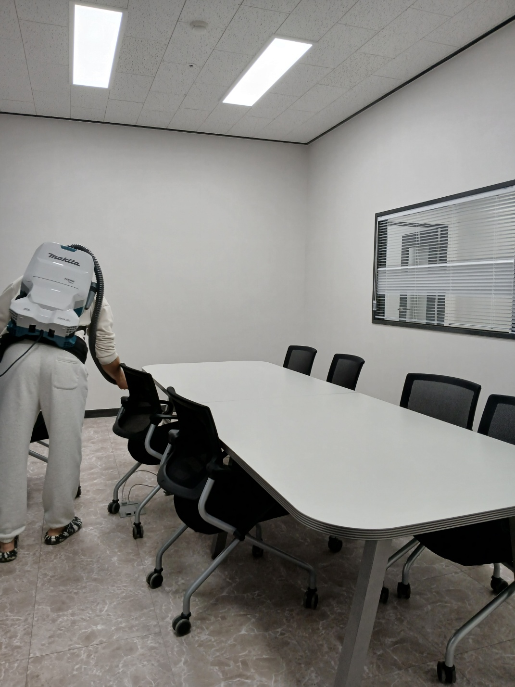
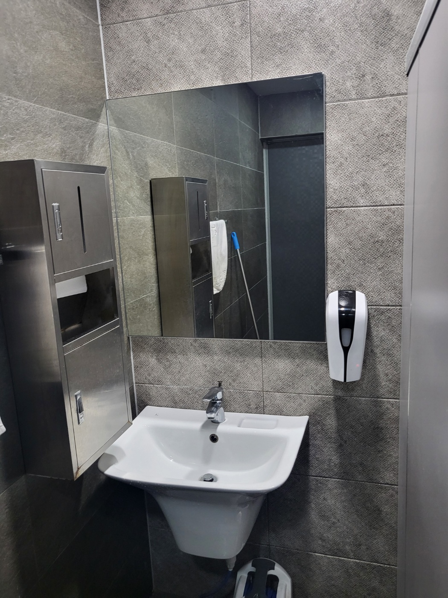
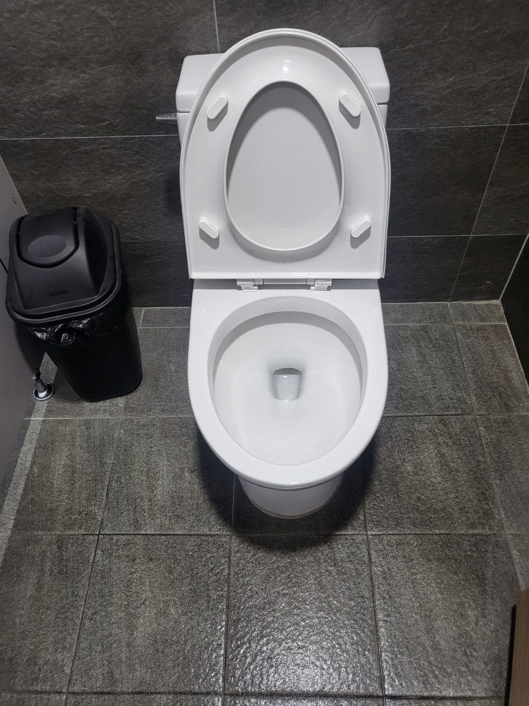

사진 안내
이 페이지의 이미지는 퍼펙트케어가 실제로 작업한 사무실·사업장·공용부 청소 사진을 활용한 병원·의원 정기청소 서비스 안내입니다. 특정 병원 현장을 지칭하는 사진은 아닙니다.
이 페이지의 이미지는 퍼펙트케어가 실제로 작업한 사무실·사업장·공용부 청소 사진을 활용한 병원·의원 정기청소 서비스 안내입니다. 특정 병원 현장을 지칭하는 사진은 아닙니다.
병원·의원은 대기공간과 공용부의 반복 관리가 중요합니다
병원과 의원은 방문객의 출입이 잦고 대기공간, 상담공간, 복도, 화장실처럼 여러 사람이 함께 사용하는 구역이 많습니다. 정기청소는 현장의 운영시간과 이용량을 고려해 작업 순서를 정하고, 바닥과 공용부를 반복적으로 관리하는 것이 중요합니다.
퍼펙트케어는 사업장 규모와 운영시간, 방문객 수, 관리 범위를 확인한 뒤 주 1회부터 주 6회까지 상담합니다.

병원·의원 정기청소에서 확인하는 공간


운영시간을 고려해 청소 동선을 잡습니다
진료시간 중에는 환자와 직원의 이동을 방해하지 않는 것이 중요하고, 마감 이후에는 넓은 바닥과 공용공간을 효율적으로 정리할 수 있습니다. 현장 상황에 따라 적절한 시간대와 관리범위를 상담합니다.
정기관리에서는 바닥 먼지와 오염, 가구 주변, 탕비공간, 화장실 등 반복적으로 오염되는 공간을 중심으로 작업합니다.

화장실과 공용공간도 함께 관리



병원·의원 정기청소는 현장별로 범위를 조정합니다
대기실, 상담실, 사무공간, 복도, 화장실 등 필요한 공간만 선택하거나 전체 범위를 묶어 관리할 수 있습니다. 의료행위나 의료폐기물 처리는 별도 전문영역이며, 퍼펙트케어의 서비스는 일반 사업장 청소 범위를 기준으로 상담합니다.
대기공간
상담·사무공간
복도·바닥
화장실
양산 병원·의원 정기청소 무료 방문견적
현장 규모와 관리 범위를 확인한 뒤 안내드립니다. 대량건도 문제없습니다.